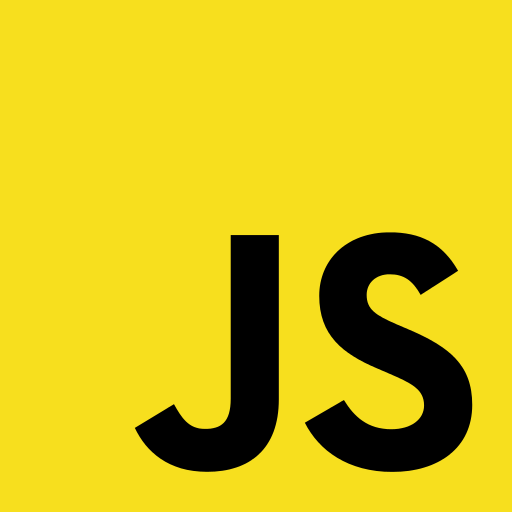
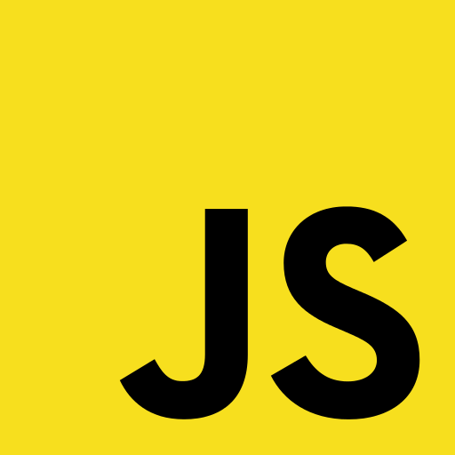

We are NSS Cohort 9
After six months of intensive training and coding +40 hours/week,
Countless cups of coffee and tea,
A few too many games of ping pong,
Dozens of apps and thousands of lines of code,
We are Cohort 9 and we are ready for your coding challenges!
Our Specialties
The curriculum at NSS has given us both the skill and the knowledge of technology required to become junior full-stack software developers, including:

 



Meet Us
We are much more than the technologies we know. Click on the images below to visit our personal sites. Invite us for a chat. We would love to get to know you.
-

Brian Macheski
Passionate about all things code and soccer. -

Brien Pafford
Audio Engineer meets Software Developer. I'm really into running, driving cars, and St. Louis Cardinals' Baseball. -

Bryan Duplantis
Passionate about technology, music, life. Relentlessly curious. Enthusiastic learner. Cheerful problem solver.Tenacious observer. -

Caleb Gregory
So far, I've been a hacker, mathematician, musician, painter, woodworker, and writer. I'm excited by difficult problems and live most in response to challenges. Cheers! -

Carter Capocaccia
I have various responsibilities within the crew. I'm kind of a jack-of-all-trades, really. I, one time, manned a flamethrower. -

Chad Cates
A juinor full stack developer. -

Chelsea Burns
Hello, world! I'm Chelsea Burns, a freelance junior developer and founder of Co.Design Software Development. My company's motto is 'building code and design with UX in mind.' -

Edwin Acevedo
Software developer via Nashville Software School. BarCamp Nashville 2015 chair. Husband, father, urban chicken farmer. Proud food opportunist. -

Greg Dick
Outside of coding I'm an avid rock climber and huge hockey fan. -

James Logan
Imagine the coolest person you've ever met... then divide that by like three or four. When I'm not writing snarky bios about myself I'm coding, reading scifi, or pretending to be really into fitness. -

Jennifer YB Jones
Strategic thinker & collaborator. I love finding exciting & engaging ways business, design, & tech can solve problems. Some of my favorite things: pho, tap dancing , late-night coding and snacking. -

John Quarles
I love learning, problem solving and making cool stuff. -

Jordan Thompson
I'm an Alabama native recently graduated from the Nashville Software School. My passion is for both design and development. Right now I am looking for a full-time entry level position in the Nashville area. -

Katy Justiss
Ex-medical librarian. Currently a junior developer, book aficionado, and cat lover. -

Kyle Turco
'Everyone has a plan 'til they get punched in the mouth' - Mike Tyson -

Logan Dougher
"We work to become, not to aquire" - Elbert Hubbard. -

Lucas McDaniel
I am a former music teacher using my patience, integrity, dedication, and problem solving skills to launch a new career as a passionate software developer. -

Matt Fili
Happy on either end of the stack as long as he's building. Ex-strategy consultant, ex-investment banker, ex-sales professional. Two of his favorite things: late night coding, making deals happen. -

Max Trenkle
I am a developer with a background in music, engineering, and computer science. I enjoy working on a great team to make great stuff, and I am excited to be a part of Nashville's welcoming tech community. -

Meg Cunningham
Business woman turned software developer, with a background in business dentistry. She gets fired up about back-end dev as well as fitness. When she isn't coding, she's training for her next NPC bodybuilding competition. -

Noah Yarian
I enjoy disc golf, ping pong, meditation, reading, circular sentences, and -

Roy Schuyler
I enjoy good coffee, creative thinking and playing golf. -So grateful for NSS -

Simone Gonzalez
Powerful Beyond Measure. Grateful Adventure Seeker.